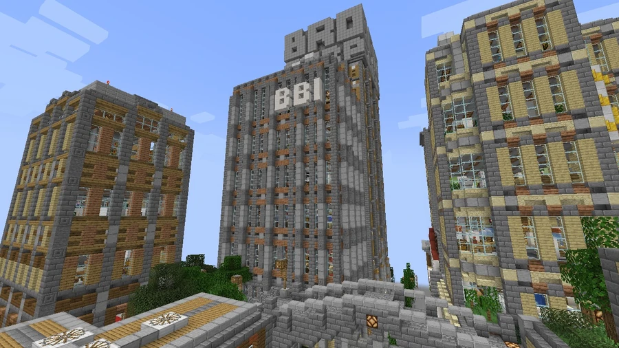
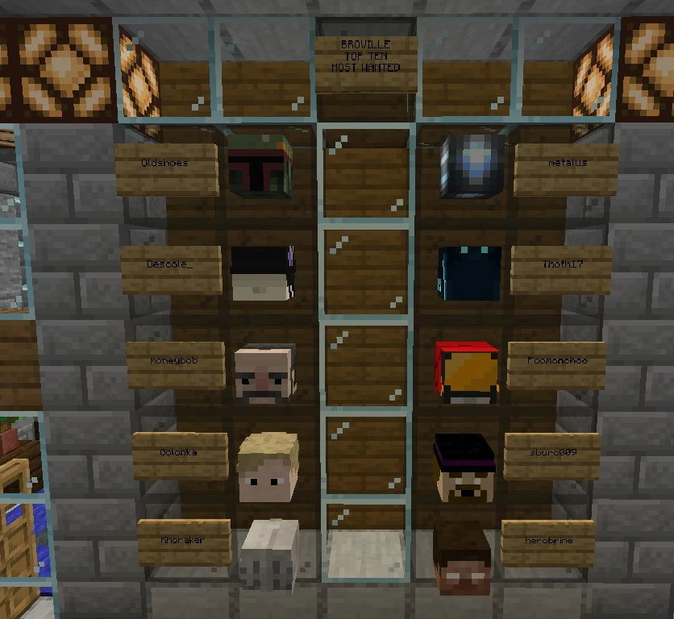

Broville Bureau of Investigation
-215, 64, 1801
The Broville Bureau of Investigation, or BBI, investigates local crime from its Downtown headquarters. Undercover investigator Paul Raten records one of its undercover operations.
Headquarters and responsibilities
The BBI headquarters occupies a skyscraper in Downtown in v11, near Brocorp Station. The agency is directed by Edgar J. Vacuum and handles local crime, including warrants for wanted suspects with bounties on their heads. A board displays the ten most wanted people in Broville v11.
The agency's stated motto is “protect and Shoot Doge.”



Equipment
Items stored at headquarters use Minecraft objects to represent police equipment:
|
Equipment |
Representation |
|---|---|
|
Baton, with the item name Baton |
Wooden sword |
|
Body armor, with the item name Body Armor |
Black leather chestplate |
|
Stun device, with the item name Taser |
Shears enchanted with Fire Aspect |
|
Helmet, with the item name Tactical Helmet |
Iron helmet |



Spoiler warningReveal spoiler
Paul Raten's infiltration
Undercover Log is the diary of Paul Raten, selected by the BBI to infiltrate the Brovalo crime family. The group operates from a headquarters called Legitimate Establishment LLC, near the stadium. Raten adopts the name Paulie Ratzingo for the operation.
On the first day, he reports being accepted after asking to join the organization. His first assignment involves stealing prototype trousers from BroBrah, Don Bestick's company. On day 43, he records his formal admission to the family and an oath of silence.
By day 187, Raten has joined the group's inner council, but suspects that the promotion was intended to keep him under closer watch. The final entry mentions preparations for a large shipment of crafting tables, which he describes as flimsy and poorly made. The diary ends with the infiltration still in progress, without confirming that his identity has been exposed.
Original documents
Read the in-world texts behind this article. Expand a title to read its full transcription; some texts reveal clues and endings.
Read original document — Undercover LogPaul Raten · 6 pages · Spoilers
Page 1
Page 2
Page 3
Page 4
Page 5
Page 6
Book recorded at -203 101 1804. Source: SPOILER_bookOutput.txt. Original spelling retained.
See also
Sources and references
- v11.4.4 maps, signs, books and items World records
- Broville Bureau of Investigation (BBI) · Broville Wiki Community archive
- Undercover Log · Paul Raten World book
- Build-team coordinate list — BBI (warp 781) Map
Text adapted and expanded from Broville Bureau of Investigation (BBI) (contributors and history, revision 4859). Adapted text is available under CC BY-SA 3.0.